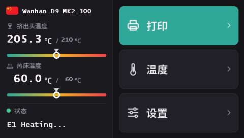

刷写 Duplicator 9 触摸屏
从 MK1 到 MK3，所有 D9 都使用同一款 DWIN T5 触摸屏（480 × 272）。配合这些固件，它运行 DGUS Reloaded 2.0——我们推出的 16 种语言新界面，通过 microSD 卡刷写。
下载 DWIN_SET.zip（DGUS Reloaded 2.0）
DGUS Reloaded 2.0 带来了什么
- 16 种语言：English, Français, Deutsch, Español, Italiano, Português, Nederlands, Polski, Türkçe, Русский, العربية, हिन्दी, 中文, 日本語, 한국어, Bahasa Indonesia。在主屏幕上点击打印机名称旁边的国旗即可切换；打印机会记住你的选择。
- 耗材传感器页面：设置 → 耗材 → 耗材传感器。参见耗材传感器。
- 常驻的状态栏：最后一条消息（例如 Ready）会一直显示在屏幕上，不会在 30 秒后消失。
- 喷嘴和热床的温度仪表，并标出目标温度。
- 所有页面焕然一新：深色主题、更大的按钮、弹窗配有图标。

DGUS Reloaded 2.0 要求主板固件为 v2.0.9 或更高版本。使用 v2.0.8 或更早版本时，每次开机语言都会变回英文，耗材传感器页面也无法使用：请先刷写主板。
1. 格式化 microSD 卡
FAT32，分配单元大小为 4096 字节。使用其他大小时，屏幕会忽略这张卡。
- Windows：Windows 11 经常无法格式化为 FAT32；请使用 GUIFormat，并把分配单元大小设为 4096。
- Linux：
sudo mkfs.fat -F 32 -s 8 /dev/sdX1（先用lsblk确认设备）。 - macOS：
sudo newfs_msdos -F 32 -c 8 /dev/diskN（用diskutil list确认）。
2. 复制文件
解压 DWIN_SET.zip，把整个 DWIN_SET 文件夹复制到卡的根目录。
3. 刷写
- 关闭打印机并拔掉电源线。
- 打开底座前部，就能接触到屏幕背面，microSD 卡槽就在那里。
- 插入卡片并开机。屏幕会在 10 到 30 秒内显示更新过程；等待它正常重启，整个过程需要 1 到 3 分钟。
- 关机，取出卡片，合上底座。
Wanhao 的 D9 屏幕更新视频 展示了卡槽的位置。
项目来源
DGUS Reloaded 2.0 逐页重绘了 DGUS Reloaded 1.0.3 （作者 Desuuuu，后由 Neo2003 接手）。它的源代码、生成屏幕文件的程序以及各语言翻译都在 GitHub 上。发现你的语言里有错误或别扭的用词？请在 Discord 上告诉我们，或在 GitHub 上提交 issue。
如需回到 DGUS Reloaded 1.0.3（例如使用早于 v2.0.9 的固件时），用同样的方法刷写 DWIN_SET_1.0.3.zip。
刷回 Wanhao 屏幕固件
Wanhao 屏幕固件只能配合 Wanhao 主板固件使用。MK1：使用 MK1 页面上对应版本的屏幕文件。MK1 + 套件、MK2 和 MK3：DWIN_SET_MK2.zip。步骤相同。